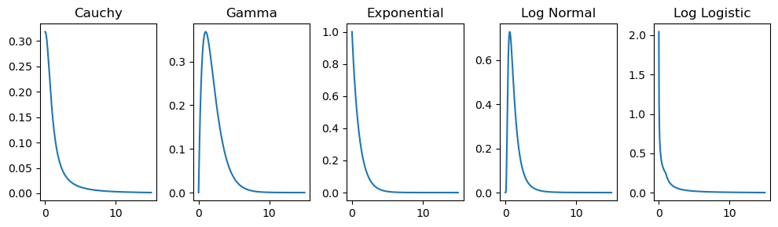

\(x_{0}\) : là thông số vị trí, chỉ định vị trí đỉnh của phân phối
\(\gamma\) : là thông số tỷ lệ chỉ định nửa chiều rộng ở nửa tối đa (HWHM), \(2 \gamma\) là toàn bộ chiều rộng ở mức tối đa một nửa (FWHM). \(\gamma\) là một nửa phạm vi liên phần và đôi khi được gọi là lỗi có thể xảy ra
Hàm mât đô xác suất (PDF) của phân phối Gamma:
\[
f(x ; k ; \theta)=\frac{x^{k-1} e^{-\frac{x}{\theta}}}{\theta^{k} \Gamma(k)}, \text { for } x>0 \text { and } k, \theta>0
\]
\(k\) : là tham số hình dạng
\(\theta\) : là tham số tỷ lệ
\(x\) : là biến ngẫu nhiên
\(\Gamma(k)\) : là hàm gamma được đánh giá tại \(\mathrm{k}\)
Hàm mật đô xác suất (PDF) của phân phối Exponential:
Một biến ngẫu nhiên \(X\) tuân theo phân phối Log-normal \(\left(X \sim \operatorname{Lognormal}\left(\mu_{x}, \sigma_{x}^{2}\right)\right)\) nếu \(\ln (X)\) tuân theo phân phối chuẩn với giá trị trung bình là \(\mu\) và phương sai \(\sigma^{2}\)
Để lựa chọn phân phối phù hợp cho từng phân nhóm, Nhóm mô hình lựa chọn mô hình có SSE (Sum of square error - tổng của sai số bình phương) nhỏ nhất với SSE được tính theo công thức sau:
\[
\left.S S E=\sum \text { (Giá trị thực tế - Giá trị được tính ra từ mô hình phân phối }\right)^{2}
\]
Cuối cùng, từ mô hình phân phối vừa được lựa chọn (là mô hình có SSE nhỏ nhất).
import numpy as npimport matplotlib.pyplot as pltfrom scipy.stats import cauchy, gamma, expon, lognorm, loglaplace# Define the x range for the plotx = np.linspace(0, 15, 1000)# Create a single row with 5 subplotsfig, axs = plt.subplots(1, 5, figsize=(10, 3))# Cauchy Distributioncauchy_pdf = cauchy.pdf(x)axs[0].plot(x, cauchy_pdf)axs[0].set_title("Cauchy")# Gamma Distributiongamma_pdf = gamma.pdf(x, a=2)axs[1].plot(x, gamma_pdf)axs[1].set_title("Gamma")# Exponential Distributionexponential_pdf = expon.pdf(x)axs[2].plot(x, exponential_pdf)axs[2].set_title("Exponential")# Log Normal Distributionlog_normal_pdf = lognorm.pdf(x, s=0.7)axs[3].plot(x, log_normal_pdf)axs[3].set_title("Log Normal")# Log Logistic Distributionlog_logistic_pdf = loglaplace.pdf(x, c=0.5)axs[4].plot(x, log_logistic_pdf)axs[4].set_title("Log Logistic")# Adjust layoutplt.tight_layout()# Display the plotplt.show()

Python Example
import numpy as npimport pandas as pdimport scipy from scipy import stats import scipy.optimize as optimize
1. Các hàm liên quan
1.1 Hàm phân phối gamma
class opt_gamma:def__init__(self, actual_pd):self.actual_pd = actual_pdself.x_input =range(1, len(actual_pd) +1)def func(self, x, scale, a, b): predict = stats.gamma.pdf(x, a = a, scale = b) * scalereturn predictdef sse(self, params, xobs, yobs): ynew =self.func(xobs, *params) mse = np.sum((ynew - yobs) **2) return msedef solver(self): p0 = [1,1,1] bounds = [(0.0001, 2), (0.0001, 10), (0.0001, 10)] res = scipy.optimize.minimize(self.sse, p0, args=(self.x_input, self.actual_pd), bounds= bounds) # res = scipy.optimize.minimize(self.sse, p0, args=(self.x_input, self.actual_pd), method='Nelder-Mead') return resdef predict(self, t=30): res =self.solver() ypred =self.func(range(1, t+1), *res.x) return ypred